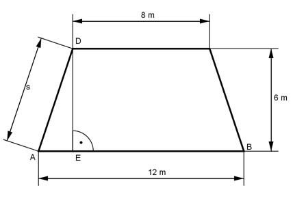

Pythagoras Aufgabe 77 Berechnen Sie von dem gleichschenkligen Trapez den Umfang U in cm.  Satz von Pythagoras im Dreieck AED: 12 cm – 8 cm AE = -------------- = 2 cm 2 s² = ED² + AE² s² = 6² cm² + 2² cm² = 36 cm² + 4 cm² = 40 cm² |√ s = 6,3 cm U = 2 * s + 12 cm + 8 cm = 12,6 cm + 12 cm + 8 cm = 32,6 cm